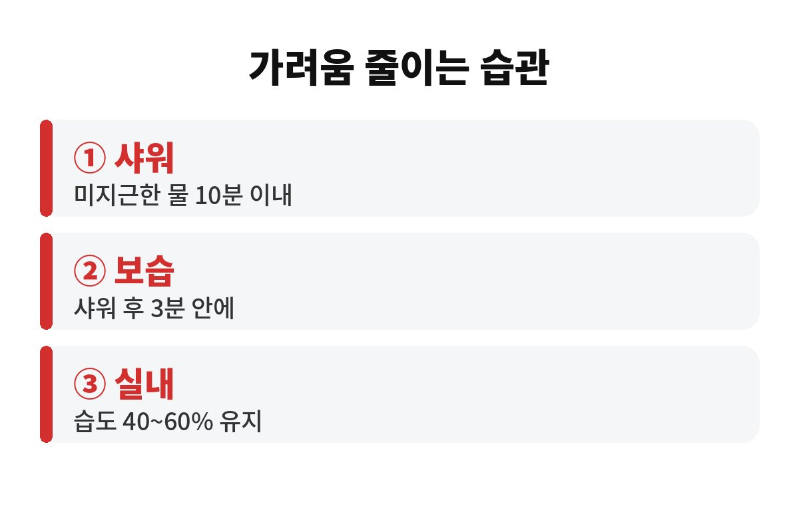
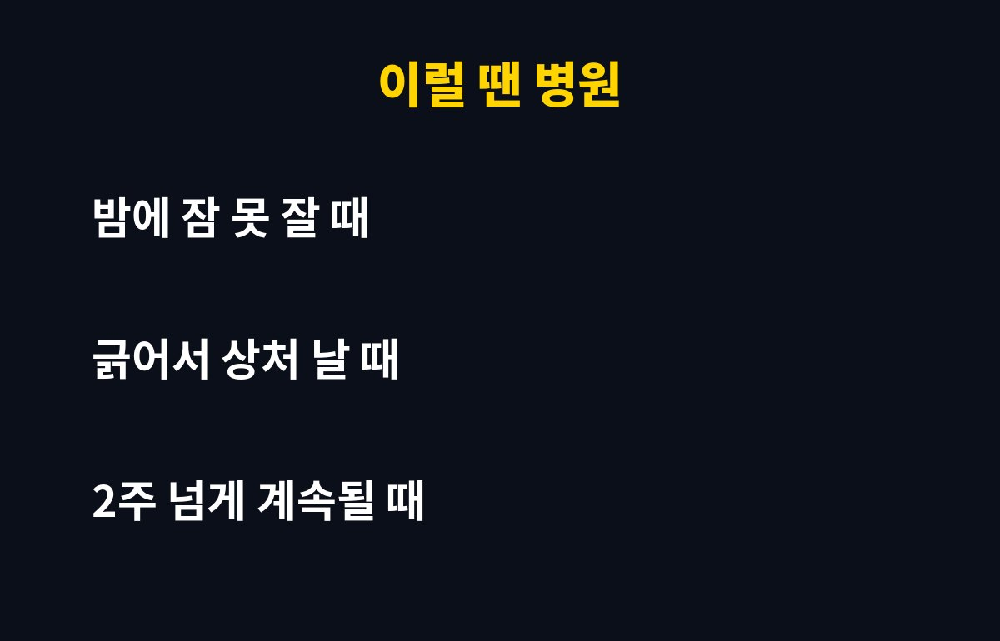

환절기 피부 가려움은 대부분 피부 보호막이 마르면서 생기고, 뜨거운 물로 오래 하는 샤워가 이걸 더 부추기는 경우가 많아요. 요즘 밤마다 팔다리가 간지러워서 긁고 계신 분이라면, 혹시 샤워 습관부터 점검해 보셨나요?
아침저녁으로 기온이 뚝 떨어지고 난방이 시작되는 지금이 딱 가려움이 심해지는 시기예요. 오늘은 왜 가려운지, 어떻게 하면 줄일 수 있는지 쉽게 풀어드릴게요.
우리 피부 가장 바깥층에는 수분과 지방으로 이뤄진 얇은 보호막이 있어요. 이 막이 수분을 붙잡아 주고 외부 자극을 막아 주는데, 공기가 건조해지면 이 막부터 약해져요.
보호막이 약해지면 피부가 쉽게 갈라지고, 아주 작은 자극에도 신경이 예민하게 반응해요. 그게 바로 "이유 없이 간지럽다"는 느낌의 정체죠. 특히 정강이, 팔 안쪽, 옆구리, 등처럼 피지가 적은 부위가 먼저 가려워지는 편이에요.
여기에 일교차가 커지고 난방까지 켜면 실내외 환경이 계속 바뀌어서 피부가 적응할 틈이 없어요. 나이가 들수록 피부 속 지방 분비가 줄어서, 40대 이후에는 같은 환경에서도 더 쉽게 가렵다고 알려져 있어요.
추운 날 뜨끈한 물로 샤워하면 시원하죠. 그런데 뜨거운 물은 피부 표면의 기름막을 씻어 내고, 보호막을 더 빨리 무너뜨려요. 샤워할 땐 개운한데 나오자마자 피부가 당기고 가려운 이유가 이거예요.
일반적으로 피부과에서는 미지근한 물로, 10분 안쪽으로 짧게 씻는 걸 권해요. 때수건으로 세게 미는 것도 보호막을 직접 벗겨 내는 일이라서, 가려움이 있을 땐 잠깐 쉬어 주는 게 좋아요.
비누나 바디워시도 포인트예요. 향이 강하고 거품이 많이 나는 제품일수록 세정력이 센 편이라, 건조한 시기엔 순한 제품으로 바꾸거나 쓰는 양을 줄여 보세요. 몸 전체를 매번 비누칠할 필요도 없어요. 땀과 냄새가 나는 부위 위주로만 씻어도 충분해요.
긁는 순간은 시원하지만, 긁으면 피부에 작은 상처가 생기고 염증 물질이 나와서 더 가려워지는 악순환이 시작돼요. 이걸 "가려움-긁음 순환"이라고 부르기도 해요.
그래서 가려울 땐 긁는 대신 차갑게 적신 수건을 잠깐 대 주거나, 보습제를 덧발라 주는 게 훨씬 나아요. 손톱도 짧게 정리해 두면 자기도 모르게 긁다가 생기는 상처를 줄일 수 있어요. 잘 때 무의식중에 긁는 분들은 면 소재 긴팔 잠옷을 입는 것도 도움이 돼요.
가장 중요한 건 보습이에요. 샤워 후 물기를 톡톡 닦고 3분 안에 보습제를 발라 주면 수분이 날아가는 걸 막아 줘요. 로션보다는 크림이나 연고 타입이 더 오래 버티는 편이고, 가려운 부위에는 한 번 더 덧발라 주세요.
실내 습도는 40~60% 정도로 맞추는 게 좋다고 알려져 있어요. 가습기가 없다면 젖은 빨래를 널어 두거나 물을 담은 그릇을 두는 것만으로도 조금 도움이 돼요. 물을 자주 마시고, 너무 꽉 끼는 합성섬유 옷은 피하는 것도 좋아요.
정리하면, 이 시기 가려움 관리의 핵심은 세 가지예요. 미지근한 물로 짧게 씻기, 씻고 나서 바로 보습하기, 실내 습도 지키기. 오늘 저녁 샤워 온도부터 한 단계만 낮춰 보세요.
보습을 열심히 해도 2주 넘게 계속되거나, 밤에 잠을 못 잘 정도로 심하거나, 긁어서 진물이 나고 빨갛게 번진다면 단순 건조증이 아닐 수 있어요. 아토피나 접촉성 피부염, 두드러기 같은 다른 원인이 숨어 있을 수도 있거든요.
또 피부에 눈에 띄는 변화가 없는데 온몸이 가려운 경우에는, 드물게 간이나 신장, 갑상선 같은 내부 질환이 원인인 사례도 있다고 해요. 이런 경우엔 참지 말고 피부과나 내과에서 상담을 받아 보시는 게 안전해요.
여러분은 가려울 때 어떻게 대처하세요? 나만의 보습 팁이 있다면 댓글로 알려 주세요. 도움이 되셨다면 구독해 두고 다음 건강 이야기도 받아 보세요.


※ 이 글은 일반적인 건강 정보이며 진단·치료를 대신하지 않습니다. 증상이 계속되면 전문의 상담을 권장합니다.